Algorithm Development: Clinical Data Processing and Arrhythmia Source Detection |
|
These are examples of clinical data files. These files include 3D triangular mesh, catheter locations, electrograms, and others. Clinical data are exported from the mapping system. Atrium mesh and electrograms need further processing.
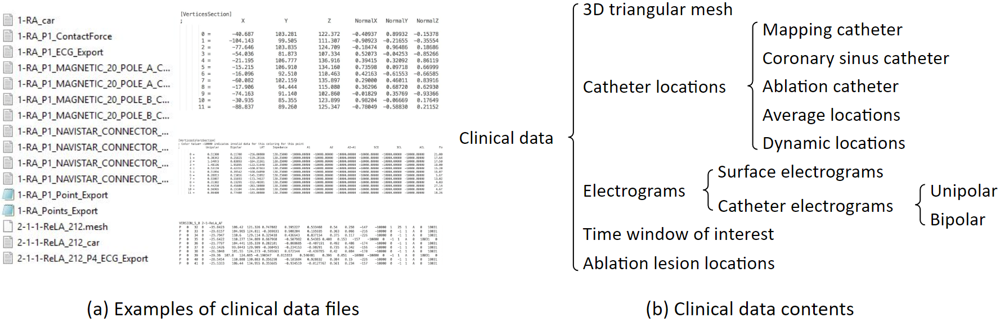
This is how atrium geometry is created. As the catheter sweeps through the inside of the left atrium, the atrium geometry is created little by little.
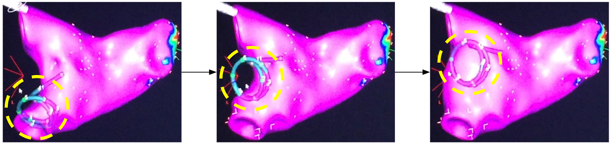
This 3D triangular mesh often has defects: For example, deep concave holes, intersecting triangular faces, non-referenced vertices and more. We developed an automated program to process it. The refined 3D mesh will not contain any defect, and the size of the triangles will be uniform.
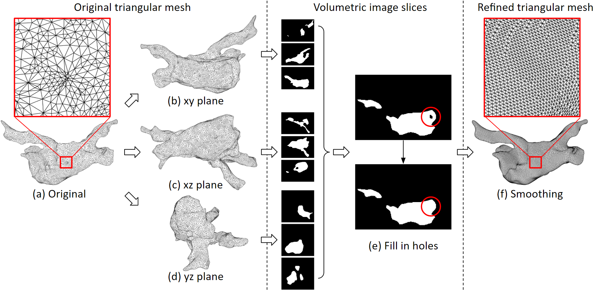
We need to cut the pulmonary veins and the mitral valve. We developed a user interface for that. Here we have selected one pulmonary vein, which is marked blue, then we can remove it from the mesh.
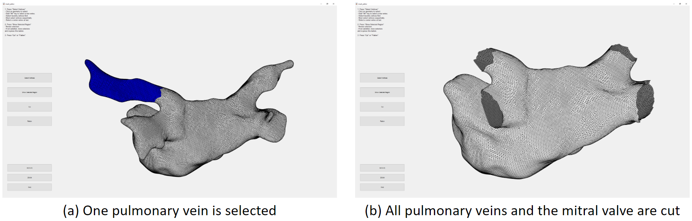
This is the algorithm for selecting a region of tissue. First, some boundary vertices and a center vertex are selected. Then, the boundary vertices are linked to form the boundary line. Then, starting from the center point, it grows outwards until it hits the boundary. So that the vertices inside the boundary are selected. We can remove the selected vertices, that will be deleting them. Or, we can fill in new triangles to flatten that region. These figures in the bottom row show the process of filling in new triangles. By doing so, we can remove spiky or deep concave regions.
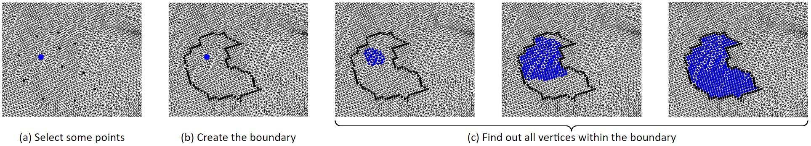
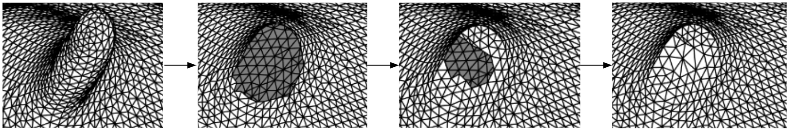
We often have atrial electrograms with ventricle QRS interference. We developed a QRS removal algorithm. First, the median signal is subtracted from each electrogram. Then, the QRS timing is found on the 12 surface electrograms, and the timing is refined using coronary sinus electrograms. Lastly, around the QRS timing, QRS templates of the mapping catheter electrograms are created and subtracted.
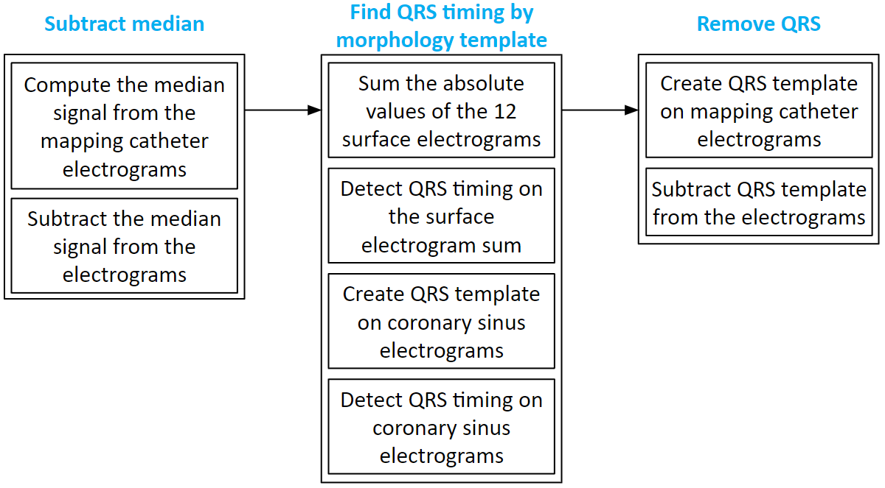
These are examples of before and after QRS removal. We can see that in figure (b), the ventricle activations are removed, and all the atrium activations preserved.
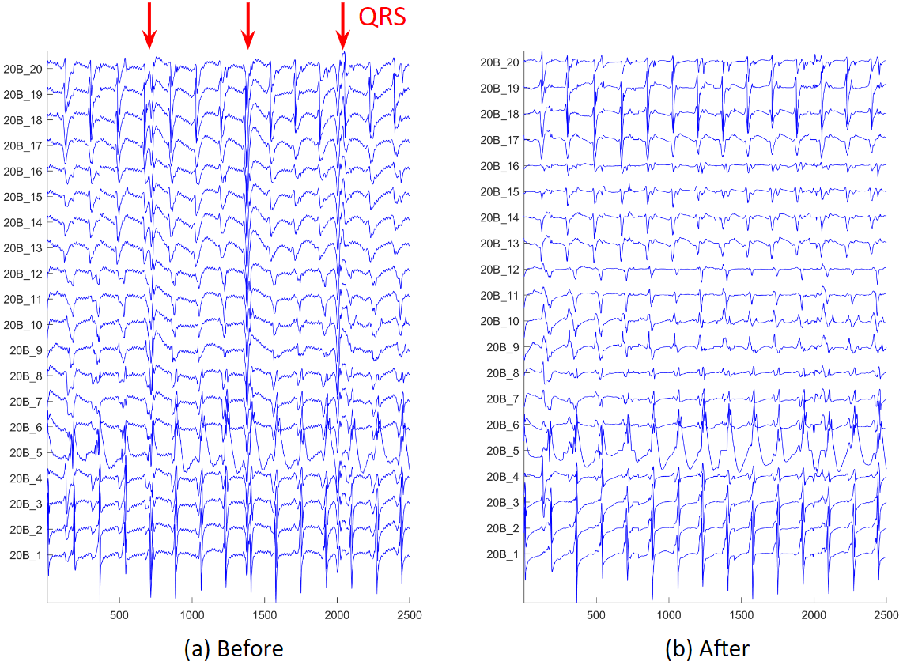
After electrogram noise is removed, we apply an activation timing detection algorithm. First, we process the original electrogram, take its absolute value and smooth it, and find the rough activation timings. Then around these rough timings, we create a median template of the electrogram. Next, cross correlation the template to the electrogram, and find the peaks of the correlation coefficients. Sometimes, we will find long intervals, we will check the correlation in that interval, and determine if additional activation needs to be added.
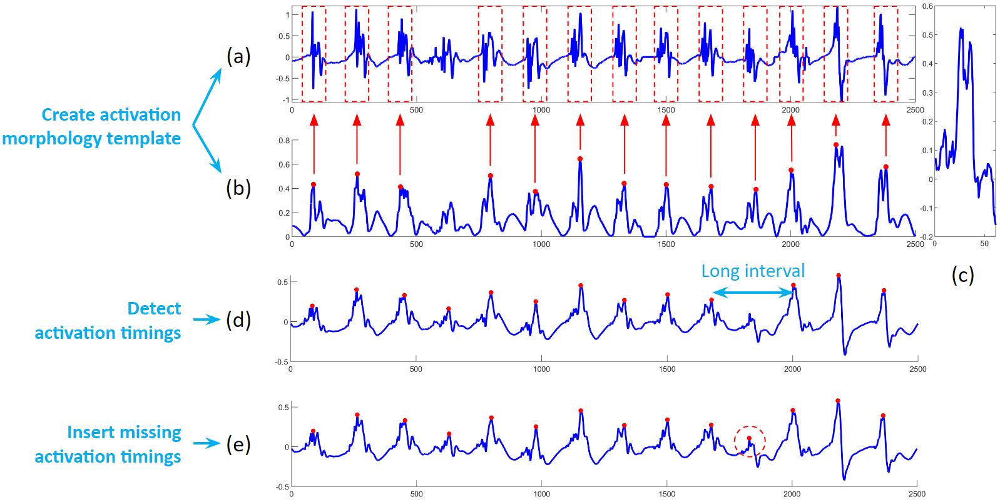
The figure below shows the activation detection results.
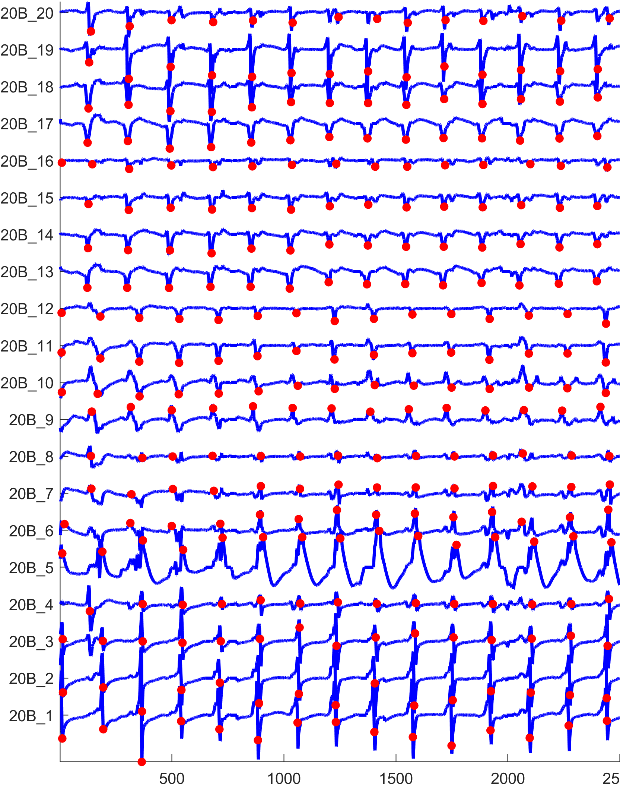
Electroanatomical maps are very useful tools for guiding ablations. This is the process to create them. It starts with processing patient data. From the electrogram, we can derive voltage, dominant frequency, fractionation, and synchrony. Then we detect the activation timings, which we can derive local activation time and cycle length. From the activation timing, we can create an activation movie, which we can derive conduction velocity and phase singularity. Each of these derived values can be interpolated to the atrium mesh. Then we convert the values to color, and it becomes a map.
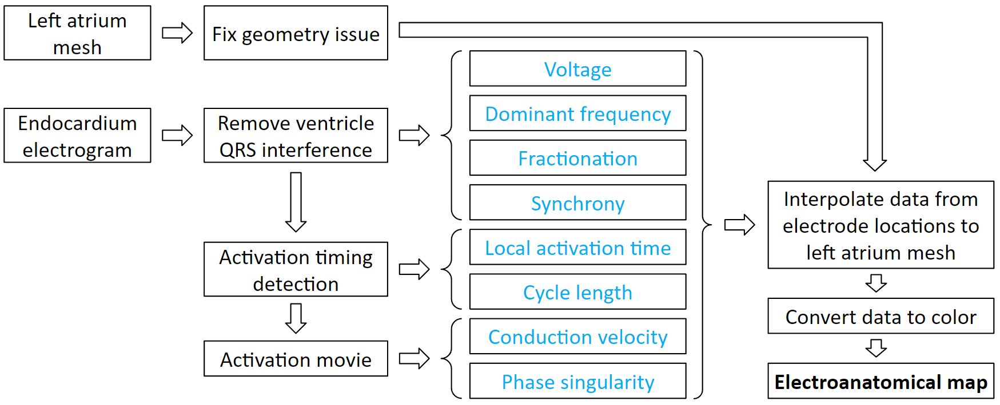
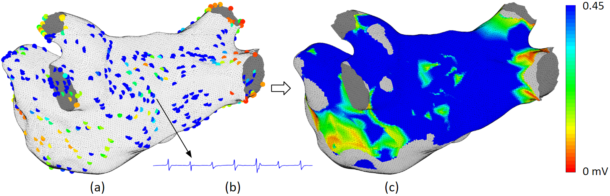
Voltage map uses color to represent the electrogram amplitude. Low voltage signifies scar. Scars do not conduct well, and complex scar distributions can lead to complex activation waves. Therefore, complex scar regions are ablation targets. As shown in this clinical example. It is a pulmonary vein isolation redo patient. The pulmonary veins were isolated but some scars regrew to be conductive, therefore, new ablations are needed to create the line of block again.
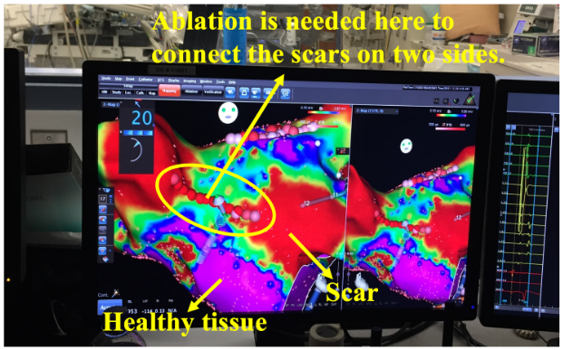
Local activation time map uses color to represent the sequence of activation. Normal activation originates from the Bachmann Bundle region. If the earliest activation site is elsewhere, then we need to ablation it. As shown in this clinical example, the focal source is marked in red, and ablations have been given there.
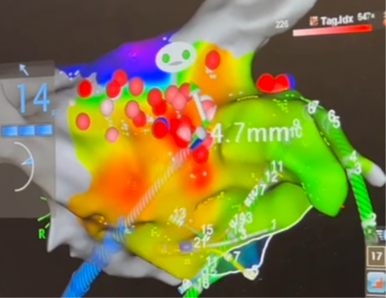
Although the activation time map is very useful, it can be confusing too. The choice of the time window of interest can dramatically affect how the activation map looks. Here is an example to illustrate. Figure (a1) and (a2) are activation maps derived from the same activation. We can see that these 2 maps look very different, only because their choice of time window of interest are different. Physicians are trained to look for the red area as the focal source. But the woi choice is not always the best. This is not a problem for a computer program. All it needs is to find the local minima. This shows that our system can make what is invisible visible.
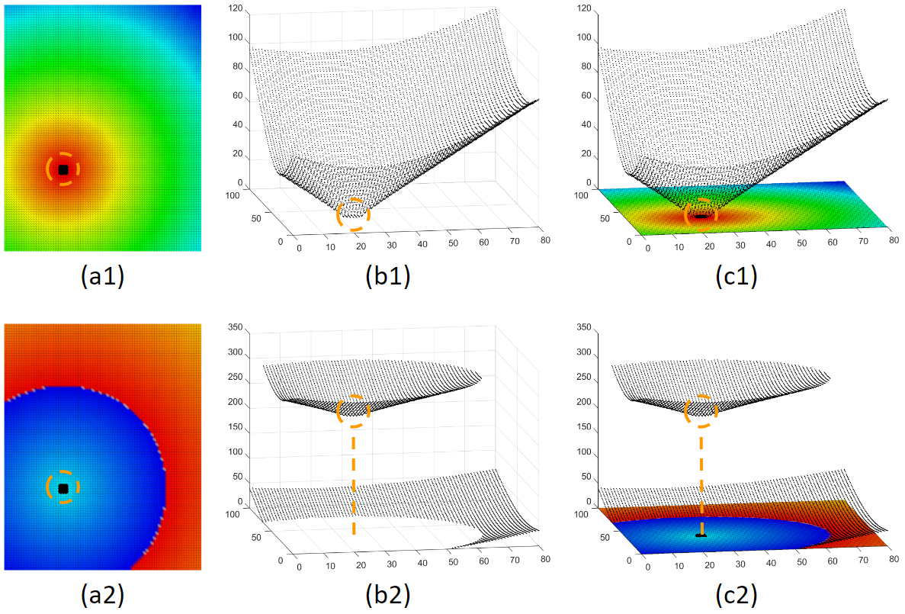
Our system can provide various ablation guidance maps. Here are some examples. Having multiple maps of different features is helpful for identifying arrhythmia source locations. If several maps point to the same location, Then we will have high confidence that ablating that location can terminate at least the regional arrhythmia.
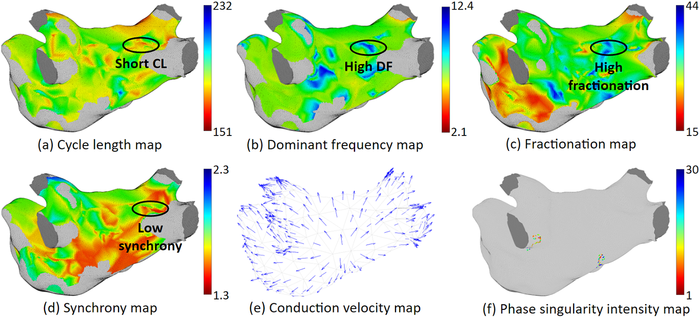
|